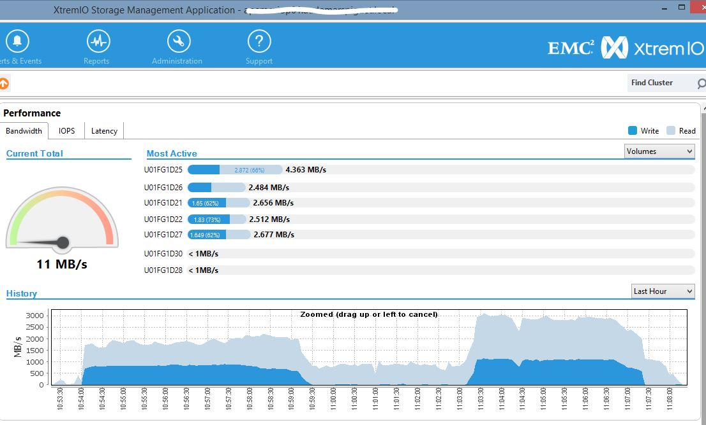
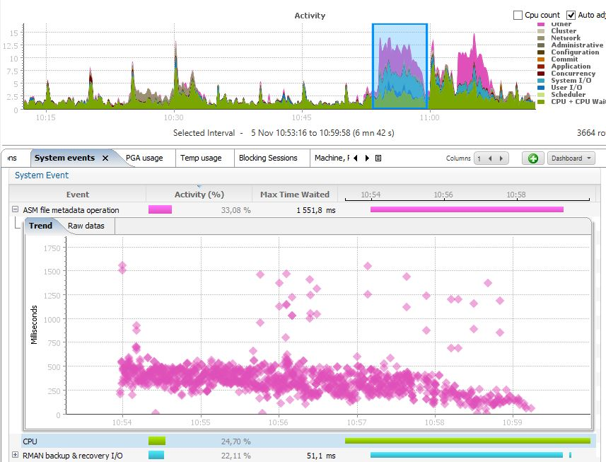
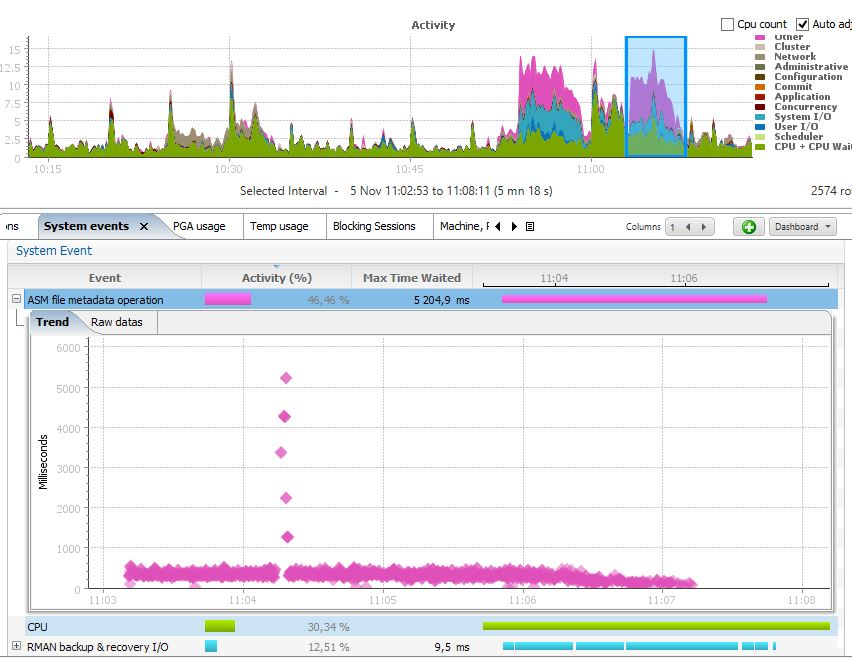

|
|
This was first published on https://blog.dbi-services.com/rman-channels-in-rac (2015-11-05)
Republishing here for new followers. The content is related to the the versions available at the publication date
When you want to minimize the backup or restore duration, you can parallelize RMAN operations by allocating multiple channels. If you are in cluster, you can open channels from several nodes. Let’s see why, how, and a strange issue: need to set cell_offload_processing=false even if not on Exadata.
Why do I want to run backup or restore from several nodes instead of opening all channels from one node? Usually the bottleneck is on the storage, not the host. But storage have evolved a lot and the FC HBA throughput may be lower than the storage capability.
Here I’ve an EMC XtremIO Brick storage which can deliver 3GB/s and I’ve 4 nodes with two 10 Gbit/s HBA each. Which mean that one node cannot transfer more than 2GB per second. I need to use more than one node if we want the full rate of the XtremIO brick.
Here is the node HBA configuration that shows the two 10 Gbit/s:
# systool -c fc_host -v
Class = "fc_host"
Class Device = "host1"
Class Device path = "/sys/devices/pci0000:00/0000:00:03.0/0000:05:00.0/0000:06:00.0/0000:07:00.0/0000:08:03.0/0000:0c:00.0/host1/fc_host/host1"
active_fc4s = "0x00 0x00 0x01 0x00 0x00 0x00 0x00 0x01 0x00 0x00 0x00 0x00 0x00 0x00 0x00 0x00 0x00 0x00 0x00 0x00 0x00 0x00 0x00 0x00 0x00 0x00 0x00 0x00 0x00 0x00 0x00 0x00 "
dev_loss_tmo = "10"
fabric_name = "0x200a002a6a2505c1"
issue_lip =
maxframe_size = "2048 bytes"
node_name = "0x20f20025b5000012"
port_id = "0x510002"
port_name = "0x200a0025b5200002"
port_state = "Online"
port_type = "NPort (fabric via point-to-point)"
speed = "10 Gbit"
supported_classes = "Class 3"
supported_fc4s = "0x00 0x00 0x01 0x00 0x00 0x00 0x00 0x01 0x00 0x00 0x00 0x00 0x00 0x00 0x00 0x00 0x00 0x00 0x00 0x00 0x00 0x00 0x00 0x00 0x00 0x00 0x00 0x00 0x00 0x00 0x00 0x00 "
supported_speeds = "10 Gbit"
symbolic_name = "fnic v1.5.0.1 over fnic1"
tgtid_bind_type = "wwpn (World Wide Port Name)"
uevent =
Device = "host1"
Device path = "/sys/devices/pci0000:00/0000:00:03.0/0000:05:00.0/0000:06:00.0/0000:07:00.0/0000:08:03.0/0000:0c:00.0/host1"
uevent = "DEVTYPE=scsi_host"
Class Device = "host2"
Class Device path = "/sys/devices/pci0000:00/0000:00:03.0/0000:05:00.0/0000:06:00.0/0000:07:00.0/0000:08:04.0/0000:0d:00.0/host2/fc_host/host2"
active_fc4s = "0x00 0x00 0x01 0x00 0x00 0x00 0x00 0x01 0x00 0x00 0x00 0x00 0x00 0x00 0x00 0x00 0x00 0x00 0x00 0x00 0x00 0x00 0x00 0x00 0x00 0x00 0x00 0x00 0x00 0x00 0x00 0x00 "
dev_loss_tmo = "10"
fabric_name = "0x2014002a6a2508c1"
issue_lip =
maxframe_size = "2048 bytes"
node_name = "0x20f20025b5000012"
port_id = "0xdd0003"
port_name = "0x200b0025b5200002"
port_state = "Online"
port_type = "NPort (fabric via point-to-point)"
speed = "10 Gbit"
supported_classes = "Class 3"
supported_fc4s = "0x00 0x00 0x01 0x00 0x00 0x00 0x00 0x01 0x00 0x00 0x00 0x00 0x00 0x00 0x00 0x00 0x00 0x00 0x00 0x00 0x00 0x00 0x00 0x00 0x00 0x00 0x00 0x00 0x00 0x00 0x00 0x00 "
supported_speeds = "10 Gbit"
symbolic_name = "fnic v1.5.0.1 over fnic2"
tgtid_bind_type = "wwpn (World Wide Port Name)"
uevent =
Device = "host2"
Device path = "/sys/devices/pci0000:00/0000:00:03.0/0000:05:00.0/0000:06:00.0/0000:07:00.0/0000:08:04.0/0000:0d:00.0/host2"
uevent = "DEVTYPE=scsi_host"
In that test, I didn’t rely on speed specification and opened lot of channels: 2 channels from each node. Here is how to allocate channels from several nodes: you need to connect to all nodes.
run {
allocate channel C11 device type disk format '+FRA' connect 'sys/"..."@(DESCRIPTION=(CONNECT_DATA=(SERVICE_NAME=XXXX))(ADDRESS=(PROTOCOL=TCP)(HOST=10.230.160.201)(PORT=1521)))';
allocate channel C12 device type disk format '+FRA' connect 'sys/"..."@(DESCRIPTION=(CONNECT_DATA=(SERVICE_NAME=XXXX))(ADDRESS=(PROTOCOL=TCP)(HOST=10.230.160.201)(PORT=1521)))';
allocate channel C21 device type disk format '+FRA' connect 'sys/"..."@(DESCRIPTION=(CONNECT_DATA=(SERVICE_NAME=XXXX))(ADDRESS=(PROTOCOL=TCP)(HOST=10.230.160.202)(PORT=1521)))';
allocate channel C22 device type disk format '+FRA' connect 'sys/"..."@(DESCRIPTION=(CONNECT_DATA=(SERVICE_NAME=XXXX))(ADDRESS=(PROTOCOL=TCP)(HOST=10.230.160.202)(PORT=1521)))';
allocate channel C31 device type disk format '+FRA' connect 'sys/"..."@(DESCRIPTION=(CONNECT_DATA=(SERVICE_NAME=XXXX))(ADDRESS=(PROTOCOL=TCP)(HOST=10.230.160.203)(PORT=1521)))';
allocate channel C32 device type disk format '+FRA' connect 'sys/"..."@(DESCRIPTION=(CONNECT_DATA=(SERVICE_NAME=XXXX))(ADDRESS=(PROTOCOL=TCP)(HOST=10.230.160.203)(PORT=1521)))';
allocate channel C41 device type disk format '+FRA' connect 'sys/"..."@(DESCRIPTION=(CONNECT_DATA=(SERVICE_NAME=XXXX))(ADDRESS=(PROTOCOL=TCP)(HOST=10.230.160.204)(PORT=1521)))';
allocate channel C42 device type disk format '+FRA' connect 'sys/"..."@(DESCRIPTION=(CONNECT_DATA=(SERVICE_NAME=XXXX))(ADDRESS=(PROTOCOL=TCP)(HOST=10.230.160.204)(PORT=1521)))';
backup as backupset tablespace CPY format '+FRA' tag 'TEST-BACKUP';
}
Then I can expect to reach the limit of the XtremIO Brick, which is 3GB/s:

As you can see here, I had a surprise at the first test: limited to 2GB/s as if that came from only one node. I’ll detail it later. If you check the second test, I’ve reached the 3GB/s which is great. Of course I don’t need to have 8 channels for that. 3 channels are ok, and over 2 nodes so that I can use 3 10Gbit channels.
Now the fun part…
You have seen that I had contention in the first test. Here it is: 
I was waiting very long time (average 500ms) on ‘ASM file metadata operation’ the parameter p1 being ‘msgop’=41. There is a bug which is supposed to be fixed in 11.2.0.3 (@cgswong blog post about it). I’m in 11.2.0.3 so it’s supposed to be fixed, but the workaround solved by issue.
And the workaround is:
SQL> alter system set cell_offload_processing = false;
Funny, isn’t it? I’m not on Exadata, so I don’t have offload processing, but it seems that some offloading code is still running and brings contention here. Just disable it and the wait event is still there, but lower wait time: 
Even if to wait is still there, and the time is still in hundred of seconds, it seems that be issue is fixed because I can reach the maximum throughput (3GB/s)
If you encounter that wait event and you are not on Exadata, then the recommendation is to disable offloading.
|
|
{kind=link}
{kind=link}
{kind=link}
Hello Franck,
Just about this bug, it is not fixed even in 11.2.0.4 and you can encounter it in SE ( thx Lighty for showing this so clearly in SE). I hit it a few times on my SE RACs, I now have the use to disable cell_offload_processing on each new 11.2 RAC. Havent tried it in 12c yet.
Regards,
— Bertrand
Hi Bertrand, Thanks for your feedback. Regards, Franck.